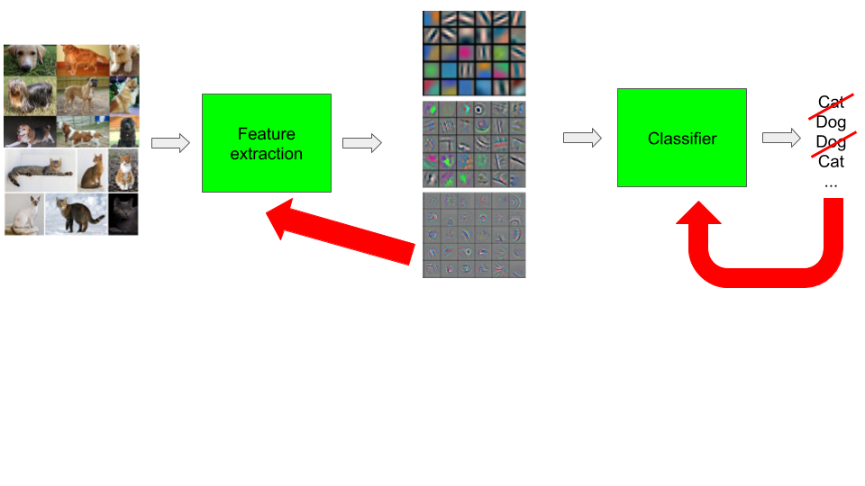

class: center, middle, title-slide count: false # Lesson 4 ##Convolutional neural networks ## ... writing a PyTorch module <br/><br/> .bold[Marc Lelarge] --- # Deep Learning pipeline ## Dataset and Dataloader + .red[Model] + .grey[Loss and Optimizer] = .grey[Training] .center[  ] --- # Overview of the course: 1- .grey[Course overview: machine learning pipeline] 2- .grey[PyTorch tensors and automatic differentiation] 3- .grey[Classification with deep learning] 4- Convolutional neural networks * .red[Building block for a model] - in PyTorch: [Convolutional layrers](https://pytorch.org/docs/stable/nn.html#convolution-layers) and [Pooling layers](https://pytorch.org/docs/stable/nn.html#pooling-layers) in `torch.nn` --- # Writing a PyTorch module We only built once a Neural Network from scratch in [lesson 2](https://github.com/mlelarge/dataflowr/blob/master/PlutonAI/02_basics_PlutonAI_colab.ipynb) ``` model = torch.nn.Sequential(torch.nn.Linear(2, 1)) ``` -- count: false A Multilayer perceptron (MLP) with a 2 dimension input, 1 dimension output, ReLU activation and one hidden layers of dimensions 50 and a final sigmoid layer can be written as: ``` import torch.nn as nn model = torch.nn.Sequential(nn.Linear(2, 50), nn.ReLU(), nn.Linear(50,1), nn.Sigmoid()) ``` -- count: false But for any model of reasonable complexity, the best is to write a sub-class of `torch.nn.Module`. --- # Writing a PyTorch module To create a module, one has to inherit from the base class `torch.nn.Module` and implement the constructor `__init__(self, ...)` and the forward pass `forward(self, x)`. Here is the code for our last model: ``` import torch import torch.nn as nn *import torch.nn.functional as F class MLP(nn.Module): def __init__(self): super(classifier, self).__init__() self.fc1 = nn.Linear(in_features=2, out_features=50) self.fc2 = nn.Linear(in_features=50, out_features=1) def forward(self,x): x = self.fc1(x) * x = F.relu(x) x = self.fc2(x) * return F.sigmoid(x) ``` [difference between `nn.ReLU()` and `F.relu`](https://discuss.pytorch.org/t/whats-the-difference-between-nn-relu-vs-f-relu/27599/2) --- # Writing a PyTorch module Inheriting from `torch.nn.Module` provides many mechanisms implemented in the superclass. First, the `(...)` operator is redefined to call the `forward(...)` method and run additional operations, see [ref](https://discuss.pytorch.org/t/any-different-between-model-input-and-model-forward-input/3690). The forward pass should be executed through this operator and not by calling forward explicitly. ``` model = MLP() input = torch.empty(12, 2).normal_() output = model(input) ``` -- count: false All `Parameters` added as class attributes are seen by `Module.parameters()`. As long as you use autograd-compliant operations, the backward pass is implemented automatically. This is crucial to allow the update of the `Parameters` with your optimizer. --- # Writing a PyTorch module Define a loss and an optimizer as before: ``` loss_fn = nn.BCELoss() optimizer = torch.optim.SGD(model.parameters(), lr=learning_rate) ``` -- count: false One step of gradient descent is done as before: ``` output = model(x) loss = loss_fn(output, label) optimizer.zero_grad() loss.backward() optimizer.step() ``` So now is time to construct more complex architectures! --- class: end-slide, center count: false The end.